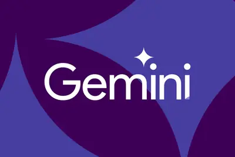
其他
其他全部主題
This week on “Uncanny Valley,” the team unpacks the Nvidia CEO’s affair with an alleged Chinese spy and what that means for the AI industry.
多重壓力交迫下，NVIDIA執行長黃仁勳最終宣布辭去總裁、執行長暨董事會成員職務，即日起生效。現任執行副總裁暨財務長Colette Kress暫代執行長，董事會同步啟動內外...
Jensen Huang’s resignation raises questions about Nvidia’s commitment to open source AI, including its Hugging Face acquisition, open-weight models, and advocacy against restrictions, as the company navigates a leadership transition.
Nvidia CFO Colette Kress is taking over as an interim replacement for longtime CEO Jensen Huang, who is embroiled in scandal.
Rally the ranks this GFN Thursday. Warhammer 40,000: Dawn of War IV is coming to GeForce NOW, allowing players to experience the battle for Kronus through cloud gaming. There’s more on the horizon, with NVIDIA DLSS 5 technology coming to War Thunder and Where Winds Meet. Meanwhil
Google推出Gemini Decision 1，不逐字寫答案、只替選項打分，專攻是非、選擇與評分判斷，約0.25秒回傳，輸出token完全免費。
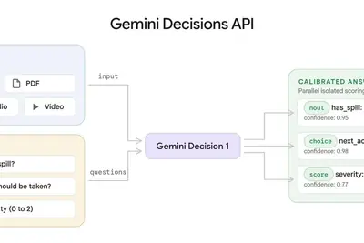
OpenAI本周三（11月11日）推出Businesses in ChatGPT，讓商家在ChatGPT中建立官方據點，作為與消費者互動和行銷管道以拓展業務。
DeepMind發布基因序列預測模型AlphaGenome 2，能依不同細胞類型與狀態，預測DNA變異對基因表現的影響。前代模型主要分析組織整體的分子活動，新版則能辨識只在特定細胞中發揮作用的變異，協助研究人員追查疾病相關的基因調控機制。
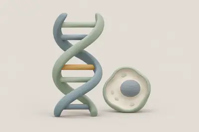
近期圍繞NVIDIA執行長黃仁勳的個人爭議持續延燒，市場關注面向，已從個人風波擴大至公司治理、接班布局及全球AI供應鏈權力結構的變化。黃仁勳正式辭任後，AI時代也將...
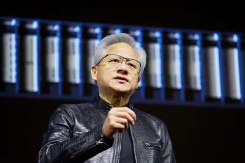
NVIDIA創辦人暨執行長黃仁勳身陷一波波桃色風暴與間諜疑雲，AI伺服器供應鏈也在暴風半徑內。台灣伺服器供應鏈業者已做「沙盤推演」，黃仁勳卸下執行長職務，對台廠短...
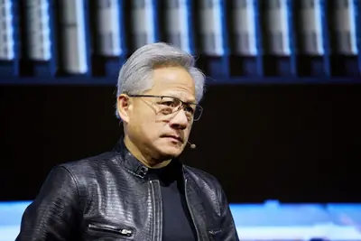
黃仁勳確定卸下NVIDIA執行長一職，而美國對高階AI晶片的出口管制也正醞釀新一波升級。業界預期，美方監管範圍將從傳統「實體貨物流向」，強勢延伸至「海外資料中心的...
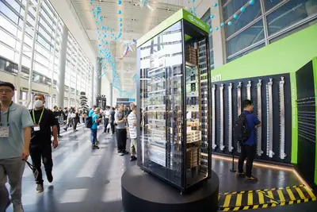
電子紙大廠元太科技積極將材料科學與精密製造能力延伸至AI高速傳輸材料領域，攜手台虹科技布局聚四氟乙烯（PTFE，俗稱鐵氟龍）材料，初期將利用元太觀音廠既有空間及...
多家外媒披露，2026年9月底，Anthropic展開一筆在AI基礎設施領域罕見的大交易：以34億美元從設備供應商OnePWR Solutions接手總計1.7GW的重型燃氣發電設備訂單。
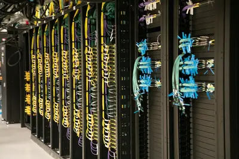
AI應用從生成式AI（Generative AI）逐步延伸至代理型AI（Agentic AI）以及實體AI（Physical AI），而網路流量規模與傳輸型態也隨之改變。
輝達（NVIDIA）執行長黃仁勳與具有中國間諜身分的黃樂（Alice Huang）爆發婚外情，讓外界了解中國具備多面向反科技封鎖的手腕和能力。由於台灣掌握全球最先進的AI晶...
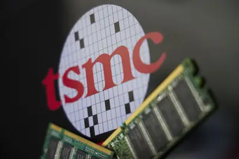
人工智慧（AI）運算需求持續攀升，記憶體資料的儲存、讀取與傳輸效率，逐漸成為影響運算效能的關鍵。英國半導體新創QuInAs開發非揮發性記憶體ULTRARAM，運用量子...
中國AI算力基礎建設持續擴張，伺服器供應商也加快資本布局。從華為x86伺服器事業獨立而出的超聚變數位技術股份有限公司（xFusion），12日正式接受深圳證券交易所創業...
NVIDIA執行長黃仁勳因私人爭議被迫下台，接下來更將面臨監管、訴訟等處境，市場面臨的衝擊將遠超GPU訂單與產品路線異動，更將直接撼動其近年親自主導、尚有多項交易...
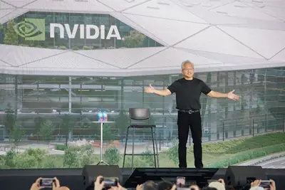
中國國家主席習近平與美國總統川普（Donald Trump）2026年第三次峰會前橫生枝節，隨著NVIDIA執行長黃仁勳捲入中國女間諜指控持續延燒，美中貿易敏感神經再度引發舊...
擷發科技在無人機之外，也把「從晶片到應用」的系統整合能力帶進智慧社區，近期成功接下台灣一處建案的智慧社區專案，提供整套系統包含軟硬體的安防相關功能，也有部分...
IT之家 11 月 13 日消息，当地时间 11 月 12 日，美国公司 Flinn Artificial Intelligence (AI) Technologies LLC（以下简称 Flinn AI）向美国特拉华州地区法院提起两起专利侵权诉讼，将 Anthropic PBC 和 OpenAI OpCo 共同列为被告，指控两家公司侵犯其持有的五项神经网络相关专利。 与此同时，还有一群非营利组织也起诉了 OpenAI、Anthropico、Meta、谷歌和 SpaceXAI 等公司，试图进一步阻止这些企业开发先进 AI 模型。 Flinn AI 两起诉
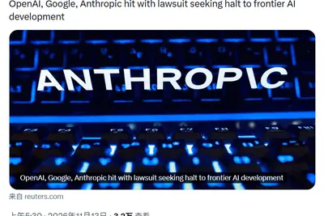
黃仁勳卸下輝達執行長，外媒分析，既有訂單可撐住短期業績，真正考驗在於接班人能否延續技術判斷與AI投資布局，決定輝達未來10年競爭力。
IT之家 11 月 13 日消息，根据美国商标和专利局（USPTO）于 11 月 3 日公示的清单， 三星公司获批一项 Galaxy Watch 智能手表专利，通过综合多项传感器数据，可以检测佩戴者的“内脏脂肪”。 该专利名为《腹部脂肪估算方法与系统》，描述了一种可在便携设备上评估腹部皮下脂肪与内脏脂肪的技术方案。专利称，该方案可降低测量复杂度，并提升估算的准确性与速度。 与普通体脂率不同，这项技术重点指向“内脏脂肪”。皮下脂肪位于皮肤下方，而内脏脂肪主要包裹在腹腔器官周围，通常需要 MRI、CT 等临床影像设备才能较准确测量；部分智能体脂秤虽能给出估算
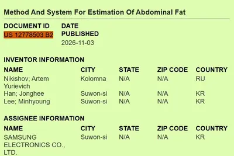
IT之家 11 月 13 日消息，根据 11 月 11 日发表于《自然》（Nature）最新研究报告， 澳大利亚科研团队通过新算法，确认 2019 年人类首张黑洞照片主角 M87 黑洞的“甜甜圈”是真的。 M87 星系中心超大质量黑洞 M87* 距离地球约 5,500 万光年，事件视界望远镜合作组于 2019 年以其为主角，公布为人类首张黑洞照片。照片中，明亮物质环绕中央暗区，形似一枚“甜甜圈”。但由于射电望远镜数据稀疏、校准复杂，学界曾质疑这一环状结构是否只是成像算法或仪器误差带来的“人工痕迹”。 澳大利亚联邦科学与工业研究组织（CSIRO）团队开发了
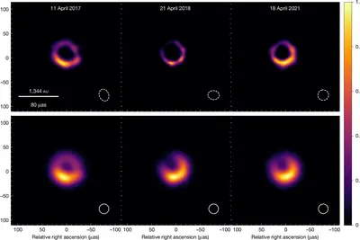
人工智慧（AI）正以前所未有的速度改變行銷產業的人才結構，使市場需求出現明顯的分化。企業在加速導入 AI 工具 […]
IT之家 11 月 13 日消息，当地时间 11 月 12 日，微软旗下 Microsoft 365 多项核心云服务发生大规模故障，影响 Outlook、Exchange Online、Microsoft Teams、OneDrive、SharePoint、Microsoft 365 Copilot 等产品，全球多个地区用户均反馈无法正常访问服务，部分用户无法收发邮件、加载邮箱或访问云端文件。 故障发生后，监测网站 Downdetector 收到大量用户报障，其中 Outlook 的问题报告数量一度接近 13 万条。除邮件服务外，Microsoft Te
IT之家 11 月 13 日消息，全球首富埃隆 · 马斯克（Elon Musk）旗下 SpaceX 公司昨日（11 月 12 日）宣布，计划在得克萨斯州和亚利桑那州投入超过 740 亿美元 （IT之家注：现汇率约合 4,947.49 亿元人民币） ， 建设两座面向人工智能的超级计算数据中心园区，标志着这家火箭公司正加速向 AI 算力基础设施扩张。 根据公告内容， SpaceX 计划投资超过 240 亿美元，在得克萨斯州星际基地（Starbase）附近建设超级计算设施 ，将建在 SpaceX 自有约 444 英亩土地上，用于训练前沿人工智能模型。Space
This Congressional investigation into Nvidia's China sales and its dealings with Trump is the second one, so far, since news of the alleged spy affair broke.
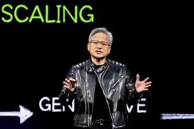
IT之家 11 月 13 日消息，据彭博社当地时间 11 月 12 日报道，马斯克旗下的两家核心企业正在推进合并谈判，双方董事会及顾问团队目前正就交易条款、合并后公司的治理结构等事项进行磋商。 知情人士透露，SpaceX 与特斯拉的合并谈判正在取得进展，双方有望于 12 月宣布合并协议，最迟可能推迟至 2027 年初。如果交易最终达成，将成为全球规模最大的企业合并交易之一。 报道称，双方谈判内容还包括 SpaceX 需要向特斯拉现有股东发行多少股份，以完成交易。特斯拉和 SpaceX 的代表均未立即回应置评请求。 如果合并完成，新公司将整合电动汽车、储能
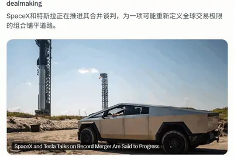
Airlines praised the AI tool, but the air traffic controllers’ union wasn’t involved.
Muse's AI can now place outbound calls to U.S. businesses — but it's not free.
IT之家 11 月 13 日消息，据 Semafor 当地时间 11 月 12 日报道，美国司法部正在开展的多项调查可能将英伟达（NVIDIA）纳入调查范围。 两名美国政府官员透露，在英伟达前 CEO 黄仁勋辞职引发的连锁反应持续发酵之际，美国司法部目前涉及英伟达、Megaspeed 和超微电脑（Supermicro）的多项调查正在推进。 其中，一项调查直接针对英伟达，重点涉及反垄断问题。另外两项调查则分别涉及科技企业 Megaspeed 和超微电脑，调查重点包括 Alice Huang 的相关活动。 Semafor 指出，目前没有迹象表明美国司法部计划
【科技早餐】今天精選 7 則國內外重要科技新聞。 ＊北京具身智慧三年計畫出爐！拚年產 20 萬台機器人、培育 5 家國際級企業 北京市經濟和資訊化局 11 月 11 日公布《具身智慧機器人產業高品質發展行動方案（2026–2028 年）》，目標在 2028 年形成每年 20 萬台機器人整機產能，培育至少 5 家國際一流、10 家國內領先的人形機器人企業。這項政策不只扶植機器人品牌，也將 AI 模型、訓練資料、零組件、製造驗證和實際場域納入同一套產業布局。北京還計畫在至少 100 個真實場景蒐集逾 100 萬小時訓練資料，加快技術走出實驗室。 供應鏈是這份
Nebius plans to fund its $40 billion AI infrastructure expansion through customer prepayments and loans, even as delays at a Microsoft data center raise questions about its financing model.
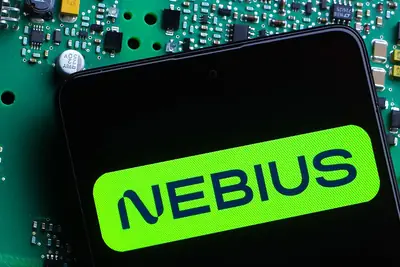
Representatives from Nvidia told Illinois representative Bill Foster that it would be technically possible to implement the anti-smuggling measures called for in the Chip Security Act, Foster told MIT Technology Review in an interview on Thursday, even while an industry group cla
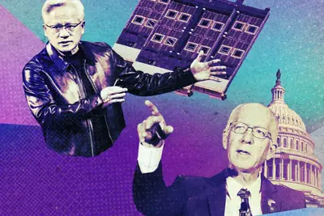
Built primarily on OpenAI models, Amplitude’s proactive product agent, Wave, identifies what to build, helps teams ship changes with coding agents, and measures the impact.
Today, we’re talking about the Jensen Huang scandal at Nvidia, which is developing so quickly that we had to do an emergency update of this intro minutes before publishing this episode. Huang just resigned from his position as CEO of Nvidia as news of his affairs, including with
https://nvidianews.nvidia.com/news/nvidia-announces-ceo-tran... https://www.reuters.com/business/retail-consumer/nvidia-ceo-... , https://www.reuters.com/live/nvidia-live-board-meets-fate-ce... https://www.nytimes.com/live/2026/11/12/business/nvidia-jens... Comments URL: https://
美國政府傳出擬擴大 AI 晶片出口管制，封堵中國企業透過海外資料中心，遠端使用輝達（Nvidia）先進晶片的管 […]